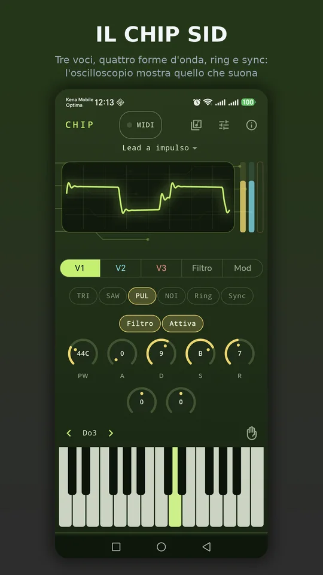
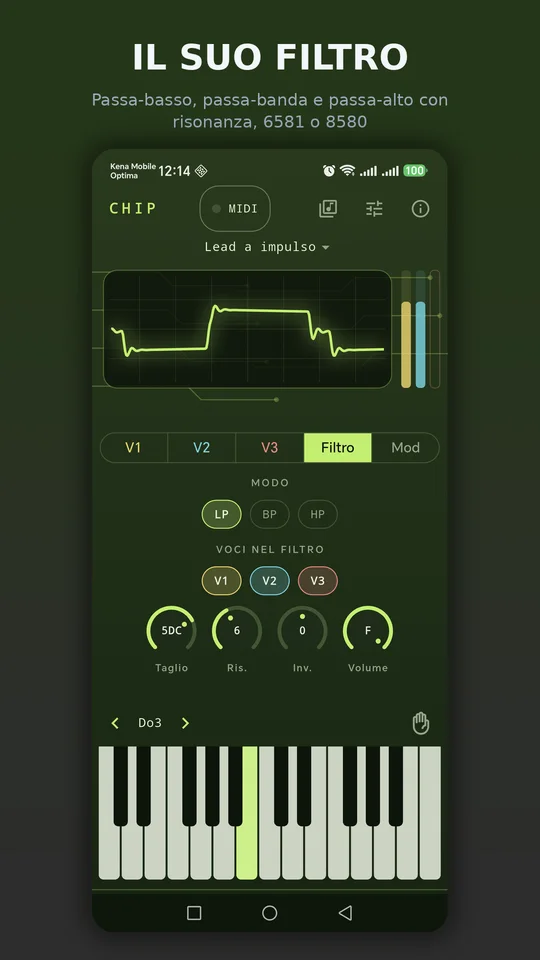
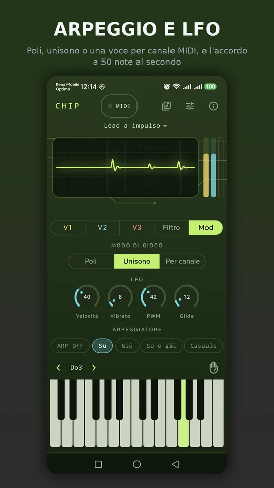
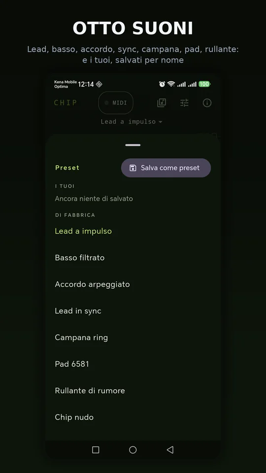

ItalianoEnglish
It opens ready to play: a sound loaded, two octaves of keys at the bottom, and above them a phosphor oscilloscope drawing what the chip is actually putting out. Under your fingers are the SID's registers — waveforms, envelope, filter — with the values written the way the chip wants them.

Three voices, four waveforms, ring and sync: the scope shows what is playing. 
Low-pass, band-pass and high-pass with resonance, on the 6581 or the 8580. 
Poly, unison or one voice per MIDI channel, and the frame-rate arpeggio. 
Eight factory sounds, and your own saved by name.
What it does
- The chip, not an imitation: triangle, sawtooth, pulse with variable width and noise, combined too; ring modulation and hard sync between neighbouring voices; ADSR envelopes with the datasheet timings and the exponential tail; multimode filter with resonance. Two models: the 6581, with the dirty filter of the first computers, and the 8580, clean and more resonant.
- Three play modes: three-note poly, unison with the three voices stacked and glide, or one voice per MIDI channel, like the columns of a tracker.
- Arpeggiator stepping at one frame, 1/50 of a second: the chord 8-bit music played on a chip with only three voices. Up, down, up-down, random, up to three octaves.
- LFO for vibrato and pulse width modulation, and the envelope that opens the filter.
- Eight factory sounds and your own, saved by name.
- In landscape the keyboard takes the whole width: three octaves on a phone, four on a tablet.
- In English and Italian, following the phone's language.
A MIDI keyboard, no permissions
Plug a USB keyboard in with an OTG cable and it is ready as soon as it shows up at the top: it comes through Android's MIDI service, which asks for no permission. Notes do not cross the interface — they go from the system straight to the audio engine, written in C++ and playing through AAudio, Android's low-latency path. With MIDI learn you touch a knob on screen and move a control on the keyboard: from then on it drives it. Sustain pedal and pitch bend work out of the box, and while the keyboard is plugged in the screen stays on.
Your data stays yours
Chip does not listen and records nothing: no microphone, no account, no servers of ours. The sound is computed on the phone, sample by sample, and your presets and MIDI assignments stay on the phone. The only permission is Internet, which the ads need.
How it is paid for
With a banner anchored at the bottom, away from the keys. A full-screen ad may appear rarely, only after saving a preset: never while you play. No subscription, no sound held hostage.